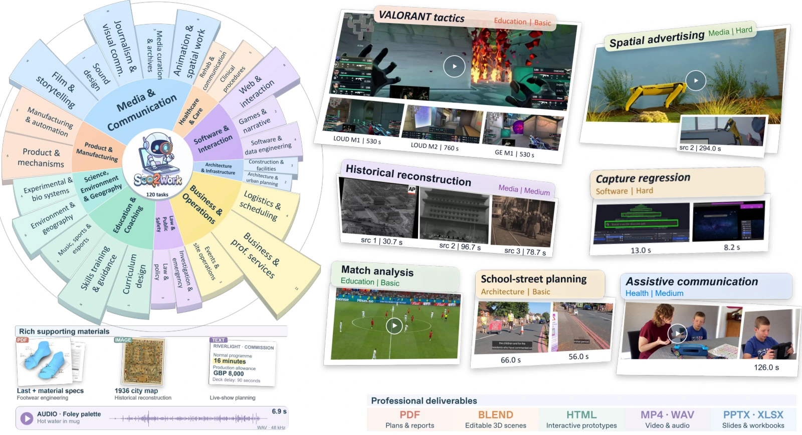

See2Work: Benchmarking Working Agents in Realistic Visual Workspaces
Across 120 tasks in nine occupational domains, See2Work evaluates the work an agent delivers, from an edited film to a usable 3D model.See2Work 用九个职业领域的 120 道任务评测智能体实际交付的作品，例如剪辑成片和可用的三维模型。
arXiv link forthcomingarXiv 链接待补Original PNG原始 PNG